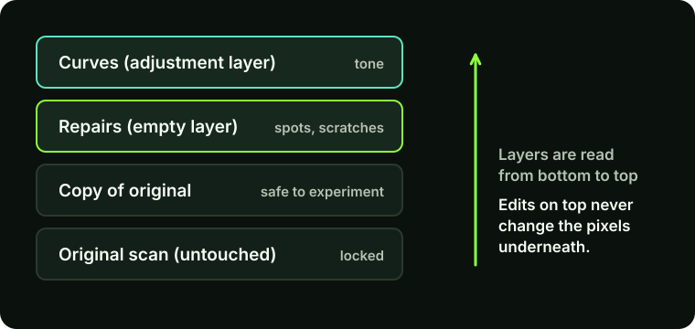
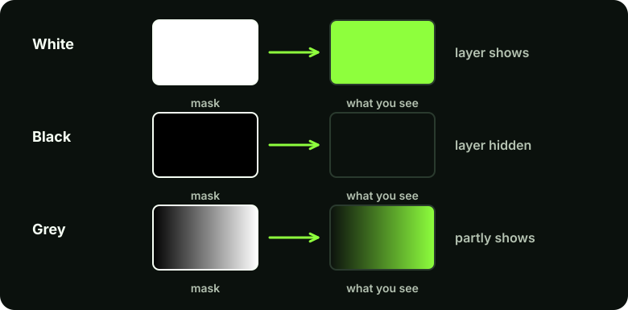

Why layers matter
When you edit a photo directly, every change is permanent: brighten the pixels and the old values are gone. Layers avoid that. Think of a stack of clear sheets laid over the original photograph. Each sheet holds one change, and you can hide, adjust or delete any sheet without touching the photo underneath.
A layer mask is the second half of the idea. It is a greyscale picture attached to a layer that decides which parts of that layer are visible. Together, layers and masks give you what editors call non-destructive editing: you can change your mind at any point because nothing was overwritten.
This guide is for people who have Photoshop open but are not sure what the Layers panel is for. It explains the ideas first, then walks through the exact steps.
The layer types you will use most

- Background layer. Your original photo. It is locked by default. Leave it alone, and do your work on layers above it.
- Pixel layers. Ordinary layers that hold pixels. You use them for repairs, such as cloning or healing dust off a face, so that the repair sits above the original instead of replacing it.
- Adjustment layers. Layers that apply a correction (brightness, contrast, colour) to everything below them without changing any pixels. Each one has settings you can reopen later.
- Smart Objects. A container that keeps a layer's original data so filters can be edited or removed later. Useful, but not needed for this guide.
Layers are applied from the bottom of the panel to the top, so what is higher in the stack is drawn over what is lower.
Step by step: your first layers
In Photoshop
Menus and panel layouts vary slightly between versions. If you cannot find the Layers panel, open Window > Layers (shortcut F7).
- Open a photo and look at the Layers panel.
You should see one layer called Background, usually with a small padlock. That is your original.
- Add an adjustment layer.
At the bottom of the Layers panel, click the half-filled circle icon (Create new fill or adjustment layer) and choose Curves or Levels. A new layer appears above the Background with a mask thumbnail already attached.
Drag the settings and watch the photo change. Switch the layer's eye icon off and on to compare. The original has not been touched.
- Add an empty pixel layer for repairs.
Click the Create a new layer icon (a square with a folded corner) at the bottom of the panel, or press Ctrl+Shift+N (Cmd+Shift+N on Mac). Double-click its name and call it something you will recognise, such as "dust repairs".
- Name your layers.
It feels like a chore for one edit and saves you when you have twelve layers. A name like "face brightness" tells you what to fix a week later; "Layer 7" does not.
- Reorder and compare.
Drag a layer up or down to change the order. Click the eye icon beside any layer to hide it. Before you finish, toggle each layer off and on, to see what it contributes.
Layer masks: controlling where a change shows
A mask works with black, white and grey, and the rule is short: white reveals, black hides, grey is partly visible. On a mask, white means "show this layer here". Black means "do not show this layer here", and the layer below shows through instead.

Masks are better than the eraser because they are reversible. If you erase part of a layer, those pixels are gone. If you paint black onto a mask, the pixels are only hidden; paint white again and they come back.
Step by step: paint a mask
This example brightens only a face in a photo where the rest is already fine.
- Add a Curves adjustment layer as in the previous section, and pull the curve up in the middle so the whole photo gets brighter. Do not worry that everything is too bright; the mask will fix that.
- Make the mask black.
Click the white mask thumbnail on the Curves layer to select it (a frame appears around it). Press Ctrl+I (Cmd+I on Mac) to invert it. The mask turns black and the brightening disappears everywhere.
- Set up the brush.
Choose the Brush tool (B). Press D to reset the colours to black and white, then X to swap them so white is the foreground colour. Choose a soft round brush, set Opacity to around 20 to 30 per cent, and make the brush slightly smaller than the face.
- Paint with white.
With the mask thumbnail still selected, paint over the face. The brightening builds up gradually where you paint. Several light strokes look more natural than one heavy one.
- Fix mistakes by swapping colours.
Painted too far? Press X so black is the foreground colour and paint over the spill. Press X again to go back to white.
- Check the mask itself.
Hold Alt (Option on Mac) and click the mask thumbnail to view the mask as a black-and-white picture. Click again to return. Hard edges or blobs are easier to see here.
In Photoshop
To add a mask to an ordinary pixel layer, select the layer and click the Add layer mask button (a rectangle with a circle) at the bottom of the Layers panel. A white mask means everything is visible; hold Alt / Option while clicking the button to start with a black mask instead.
Adobe's own help page for this is listed under Sources below, and is worth bookmarking.
Two more ideas worth knowing
Clipping a layer to the one below
If an adjustment should only affect the single layer under it, not everything beneath, hold Alt / Option and click the line between the two layers in the panel. The adjustment becomes a clipping mask and an arrow shows it is attached.
Stamping a flattened copy
To make a new layer containing everything you can currently see, without flattening your work, press Ctrl+Alt+Shift+E (Cmd+Option+Shift+E on Mac). It is useful before a final sharpening pass.
Common mistakes and how to fix them
- Painting on the layer, not the mask. If nothing seems to change, or you are painting colour onto the photo, check which thumbnail has the frame around it. Undo with Ctrl+Z and click the mask thumbnail.
- Brush opacity at 100 per cent. Hard, obvious edges usually come from a hard brush or full opacity. Use a soft brush and build up gradually.
- Can't paint white or black. The foreground colour is not what you think. Press D to reset to black and white, then X to swap.
- Adjustment appears to do nothing. It might be clipped to a layer that is hidden, or the mask may be black. Alt-click the mask thumbnail to look.
- Flattening too early. Merging layers throws away the ability to change your mind. Save a layered file (see the file formats guide) before you export a flat JPEG.
Limits to be aware of
Layers do not make a bad edit good. They only make it easier to undo. Many layers also make files large and slow, so you may want to merge or delete layers you no longer need once you are happy.
Key takeaways
- Leave the Background layer alone, and work on layers above it.
- Adjustment layers change tone and colour without changing pixels.
- On a mask, white reveals, black hides, grey is partial.
- Paint masks with a soft brush at low opacity, and press X to swap between white and black.
- Name your layers and save a layered file before exporting.
Next, see how these ideas fit together in a real workflow in restoring old family photographs, or use them to make a clean removal in the object removal guide.